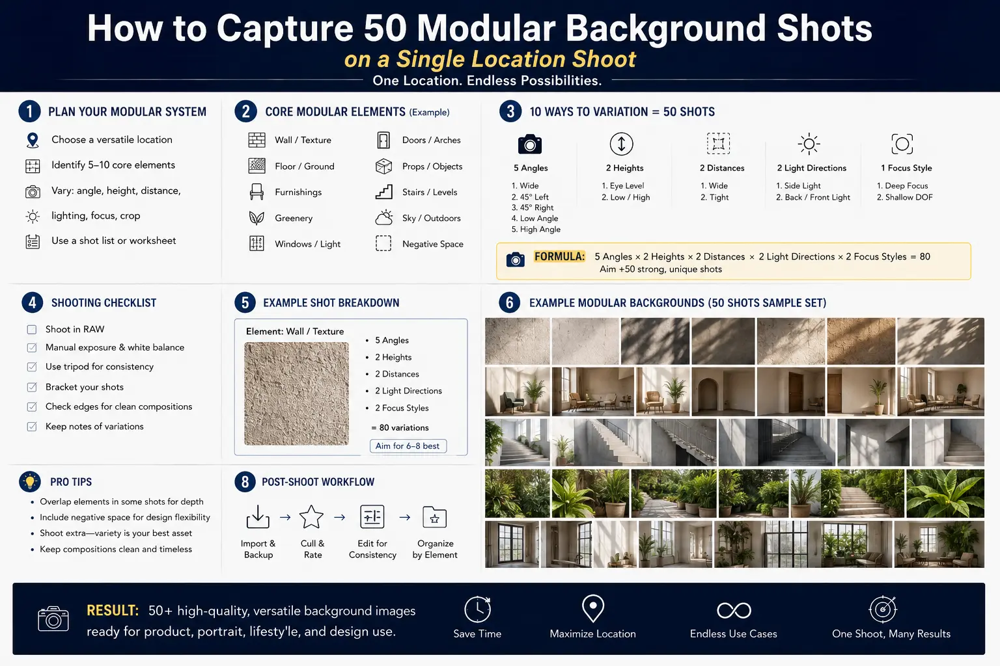
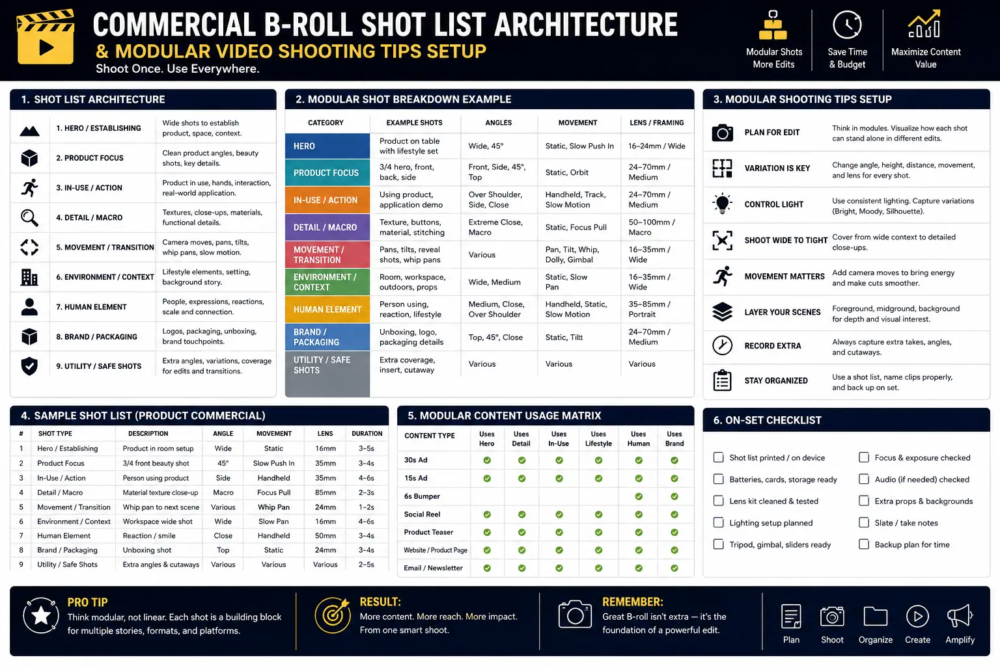
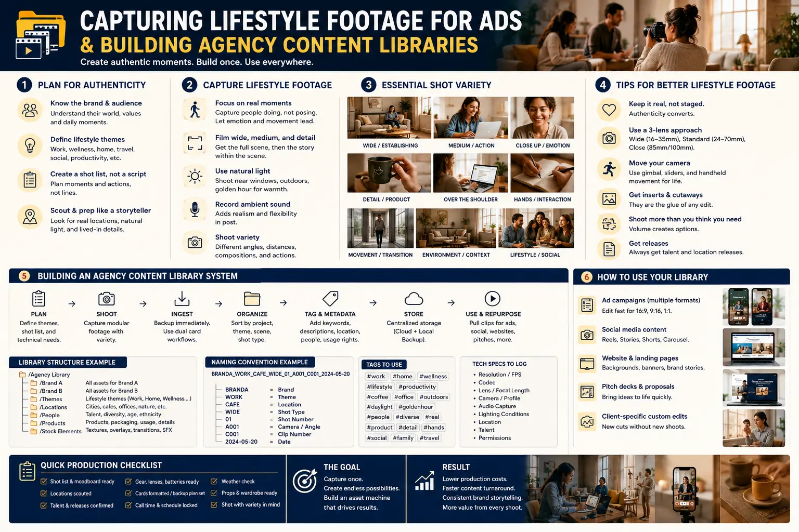

How to Capture 50 Modular Background Shots on a Single Location Shoot
The Hidden BottleNeck in Performance Video Advertising
In modern performance marketing, ad fatigue is the silent killer of campaign ROAS. Media buyers and growth marketers frequently observe that even high-converting video ad hooks burn out within two to three weeks of continuous scaling. When an ad fatigue threshold is breached, the knee-jerk reaction for many brands is to schedule an entirely new multi-day commercial shoot. However, complete re-shoots are incredibly costly, time-consuming, and operationally exhausting. The actual variable that needs updating in most performance ads is not the entire script — it is the underlying visual background b-roll, the texture plates, and the contextual lifestyle cutaways that frame the core message.
High-growth direct-to-consumer (D2C) brands and enterprise B2B organizations are increasingly abandoning single-asset filming models in favor of Batch Content Video Production. By shifting from a linear, single-script mindset to an asset-first framework, a single production day on location can generate 50 or more distinct, production-grade modular background shots. These versatile video assets serve as the foundational backbone for high-frequency ad iteration, landing page video backgrounds, and multi-channel social campaigns.
Achieving this high volume without compromising aesthetic quality requires a rigorous framework known as Commercial B-Roll Shot List Architecture. Rather than capturing random b-roll when time permits at the end of a shoot, production crews operate from a deliberate, matrix-driven blueprint that systematically harvests environmental, kinetic, micro-detail, and human-interaction footage across every square meter of a single location.
Deconstructing Commercial B-Roll Shot List Architecture
Standard commercial shot lists are typically organized chronologically around narrative scenes. While effective for traditional storytelling, linear shot lists are notoriously inefficient for rapid asset generation. Commercial B-Roll Shot List Architecture reimagines the location shoot as a multi-dimensional matrix. It separates b-roll capture into five distinct technical passes:
- Environmental Establishing Pass (Wide Spatial Plates): Capturing high-resolution, wide-angle atmospheric shots of the location. These shots establish context, mood, and spatial scale. Using a Commercial B-roll shot list template, operators capture static establishing shots, gentle motorized slider slides, and slow rising pedestal moves that provide perfect negative space for animated typography and lower-third graphics.
- Human Interaction & Kinetic Movement Pass (Medium Lifestyle): Focuses on capturing lifestyle footage for ads featuring real human activity — such as typing on a laptop, pouring coffee, writing on a whiteboard, unboxing a product, or walking through an open office. Talent is directed in continuous motion cycles rather than rigid poses to maintain authentic energy.
- Macro Texture & Tactile Detail Pass (Tight Close-Ups): Utilizing macro and telephoto lenses (85mm to 100mm) to film extreme close-ups of product textures, fingers touching high-grade materials, light reflecting off polished glass, keyboard keystrokes, and physical gestures. These tight shots serve as high-impact visual transitions between talking-head hooks.
- Dynamic Motion & Parallax Tracking Pass: Utilizing gimbals or handheld rigs to execute rapid pan-bys, whip transitions, orbits, and push-in/pull-back moves around ambient elements. These shots provide high kinetic energy necessary for grabbing scroller attention in the first three seconds of a social video ad.
- Negative Space & Text-Ready Clean Plates: Filming out-of-focus bokeh backgrounds, minimalist architectural walls, and table surfaces specifically compositionally offset to the left or right. These plates ensure that post-production editors have ample space to place bold text captions, value proposition callouts, and animated product features without visual clutter.
By deploying this systematic architecture, a single room within a office, studio, or residential location yields between 10 and 15 distinct b-roll clips. Multiplying this across four distinct areas of a single location comfortably generates over 50 modular background shots in a single 6-to-8-hour production day.
Exponential Content ROI
By maximizing production day content through structured b-roll passes, brands reduce per-asset acquisition costs by over 70% compared to traditional single-script commercial shoots.
Modular Ad Assembly
Leveraging battle-tested modular video shooting tips allows editors to seamlessly swap background plates behind voiceovers, testing dozens of hook variations in hours.
Authentic Visual Storytelling
Mastering capturing lifestyle footage for ads replaces stiff, obviously staged stock footage with genuine, relatable human interactions that boost viewer trust and conversion rates.
Long-Term Media Longevity
Populating agency content libraries with 50+ standardized modular background assets ensures creative teams have continuous raw material for months of ad refreshes.

Technical Execution & Modular Video Shooting Tips
Executing a successful high-volume b-roll shoot requires strict adherence to technical standards on set. Without standardized camera settings and lighting control, the resulting footage will feel disjointed when assembled into a single campaign. Below are essential modular video shooting tips for maintaining production consistency:
- Enforce the 5-Shot Rule per Angle Setup: For every subject or scene micro-setup, camera operators must capture five distinct variations without moving the main lighting rig: (1) Wide establishing shot, (2) Medium action shot, (3) Tight hand/detail shot, (4) Over-the-shoulder perspective, and (5) Dynamic camera movement shot. This guarantees comprehensive editing flexibility.
- High Frame Rate Mastery (60 FPS & 120 FPS): Film all kinetic b-roll and lifestyle interactions at 60FPS or 120FPS with a 180-degree shutter angle (1/120s or 1/240s shutter speed). In post-production, high frame rate footage can be played at 100% speed for natural real-time motion or slowed down to 40% or 20% speed for ultra-smooth, luxurious slow-motion plates, effectively doubling the utility of every shot.
- 360-Degree Ambient & Universal Key Lighting: Instead of setting up directional lighting that limits camera movement to a single angle, construct a high-output ambient soft key (such as an overhead lantern softbox or bounced LED array). Universal lighting allows the camera operator to orbit 360 degrees around talent and objects without casting unwanted camera shadows or needing constant light repositioning.
- Clean Plates Without Talent: After finishing a talent interaction pass, record an identical 10-second static plate of the environment without talent present. Clean plates enable visual effects editors to perform seamless cleanups, plate splits, or background replacements when adding complex 3D product renders or UI elements.
- Color Profile Standardization: Shoot all modular background footage in 10-bit Log color profiles (such as S-Log3, C-Log3, or V-Log) with fixed white balance settings (e.g., 5600K daylight or 3200K tungsten). Fixed color parameters are critical when batch-grading 50+ clips into a unified visual style for Asset-Rich Video Production.
Capturing Lifestyle Footage for Ads That Feels Natural and Authentic
Consumers in 2026 are hyper-aware of staged corporate marketing. Stiff poses, forced smiles, and unnatural eye contact instantly trigger ad resistance. When capturing lifestyle footage for ads, the camera team's objective is to capture unscripted-feeling moments that mirror authentic daily life or work routines.
Rather than instructing talent to "act natural while looking at a tablet," direct them to perform a real, continuous task. Ask an entrepreneur talent to check real analytics on their phone, review actual document printouts, or type a genuine message on a laptop. While talent performs the task, the director and camera operator move fluidly around them, capturing spontaneous micro-expressions, casual body shifts, and natural hand gestures.
Furthermore, utilizing longer focal lengths (70mm to 200mm) allows the camera team to stand further back, reducing camera awareness and creating a cinematic shallow depth of field. The resulting background shots feel candid, premium, and inherently trustworthy when paired with direct-response ad voiceovers or text hooks.
Transforming Raw Shots into Scalable Agency Content Libraries
Capturing 50 background shots is only half the battle; organizing them for rapid post-production retrieval is what converts raw footage into long-term commercial value. Professional video agencies build structured agency content libraries that allow editors to locate the exact b-roll asset in seconds.
1. Pre-Production Matrix & Shot List
- Develop a standardized Commercial B-roll shot list template organizing shots by focal length, mood, and subject action.
- Define explicit background requirements based on ad script hook angles and target audience personas.
- Conduct detailed location scout passes to identify multi-angle filming pockets across a single venue.
- Set strict color and resolution benchmarks across all primary and secondary camera bodies.
2. On-Set Batch Execution Pass
- Execute rapid 5-shot movement passes across all designated location zones.
- Prioritize high frame rate recording (60FPS/120FPS) for dual speed post-production deployment.
- Rig universal overhead lighting to support continuous 360-degree camera orbiting.
- Record dedicated clean negative space plates specifically tailored for bold text overlay ads.
3. Post-Production Indexing & Tagging
- Ingest raw footage into organized cloud asset management systems with rich metadata tags.
- Apply unified LUTs and color pipelines to maintain visual consistency across all clips.
- Index clips by action type, emotional tone, speed options, and text-space layout orientation.
- Supply media buyers and creative strategists with instant modular video building blocks for weekly ad testing.

The Role of Asset-Rich Video Production in Modern Ad Campaigns
The transition to Asset-Rich Video Production changes how growth marketing teams approach video advertising. Historically, creative agencies treated video production as a bespoke art form where one shoot equals one final 30-second commercial. If that commercial failed in testing, the client was left with zero recourse other than funding another full shoot.
In contrast, an asset-rich approach recognizes that video ads are dynamic visual systems composed of modular components: a hook visual, a problem statement, a solution showcase, social proof b-roll, and a call-to-action end card. When an agency delivers a core commercial alongside a robust library of 50 modular background shots, performance marketers gain the agility to build dozens of video ad variations:
- Hook Variation Testing: Pair the same core voiceover script with 10 different high-energy opening b-roll hooks to test which visual angle achieves the highest 3-second hold rate.
- Platform-Specific Re-Formatting: Re-crop wide modular background shots into vertical 9:16 aspect ratios for Instagram Reels and TikTok, or horizontal 16:9 for YouTube preroll ads, without losing visual balance.
- Seasonal & Promotional Refreshes: Overlay new promotional text, discount badges, or seasonal messaging over existing clean background plates, instantly refreshing fatigued ad sets without spending additional production capital.
By incorporating systematic Batch Content Video Production into your brand's growth strategy, your creative output becomes predictable, highly cost-efficient, and engineered specifically for digital ad scale.
Partnering with The PhD Ads for High-Output Video Production
At The PhD Ads, based in Madurai, we specialize in helping brands transition from fragmented single-shoot workflows to high-output, asset-driven video engines. Our team combines creative directional excellence with rigorous Commercial B-Roll Shot List Architecture to ensure that every single location shoot yields maximum commercial value.
Whether you are an e-commerce brand seeking to refresh your performance ad creatives, a B2B enterprise building corporate video assets, or a growing brand in need of deep agency content libraries, our systematic approach to maximizing production day content guarantees broadcast-quality results that drive real business metrics.
Key Topics
Ready to Build an Asset-Rich B-Roll Media Library for Your Brand?
At The PhD Ads in Madurai, we help brands and marketing teams plan, execute, and harvest 50+ modular b-roll background shots on a single location shoot. Transform one production day into months of high-performing video ad creative.
Email: team@e2o.in